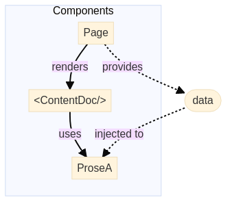

Learn - Nuxt
Here you can find how we use nuxt to create static web pages.
To contribute please read Contribution Guide.
For demo links to work, run this project in your local machine.
Content
We use Nuxt Content to render markdown content
in a web page. Add @nuxt/content under modules in .theme/nuxt.congfig.ts
Markdown files are placed at the root of to give focus on more to content than its theme layout.
Links
To link to another page, simply link to its markdown file in [Link to](other-file.md) format as demonstrated below;
Images
To include an image in markdown, place image files in a folder named -images
at the same path as that markdown file. For example; if you have a file
/demo/image-in-content.md, place its images in /demo/-images.
Demo is at Content / Images
Mermaid Diagrams
We use a preprocessor to generate mermaid diagram images from markdown files. Below is a demonstration of how to draw a diagram;

Pages
You can create pages under .theme/pages/.
Index Pages
Index pages are named index.vue and can be accessed without a route. For
example; .theme/pages/demo/index.vue is at /demo.
Demo is at /demo.
Static Routes
File name is automatically the route name e.g. .theme/pages/demo/static.vue
is at /demo/static
Demo is at /demo/static.
Dynamic Routes
To create a dynamic page you need to surround the page with '' e.g.
.theme/pages/demo/[page].vue. To make it optional surround it with [[]]
e.g. .theme/pages/demo/optional/[[page]].vue. To have a dynamic route that
can handle any depth in a path we use catch all routes e.g.
.theme/pages/demo/catch-all/[...page].vue.
- Dynamic route:
- Dynamic route with optional parameter:
- Catch all route:
Content Page
Content page is a page that uses <ContentDoc /> which renders given markdown
content as html. It is at .theme/pages/[...content-page].vue which has a
catch all route to handle any markdown file in any directory.
Querying with queryContent
We needed to load all markdown content under a folder in one page. To achieve
this we used queryContent by which you can retrieve content under content/
folder.
find,findOnemethods returnpromiseso you need to wait withawait.
Demo is at /demo/query-content
We've disabled
navigationandsurroundoptions to avoid extra queries when a page is loaded. You might reenable these depending on the theme you are using.
Querying with <ContentQuery>
We needed to load all markdown content under a folder on a single page. When
there is no need to change the data we receive with queryContent in the
script block, the query sent to the content with <ContentQuery> was made to
reduce the crowd in the script.
Demo is at /demo/content-query
Public Assets
To serve static assets in a theme like .css or .png files simply put any
file under .theme/public folder. It will be served at the root path. E.g.
.theme/public/logo.png will be at /logo.png.
Demo is at /demo/public-assets.
.pngfrom content images or generated diagrams should be served under.theme/publicbut they shouldn't be included in git. To preserve the default behaviour while solving this problem, we change public assets folder from.theme/publicto.theme/.publicviadir.publicin.theme/nuxt.config.tsand copy public assets, content images and generated diagrams into.publicduring preprocessing.
Variable
Variables can be created as shown in .theme/pages/demo/variable.
Demo is at /demo/variable.
We are using Composition API with setup in nuxt and in demos.
Computed
Computed properties can be created as shown in
.theme/pages/demo/computed/index.vue.
Demo is at /demo/computed.
Computed properties are evaluated only once while functions will be re-evaluated every time they are called.
With Ref
Ref can be used with computed properties, this results in an automatic
re-rendering after a single re-evaluation when dependencies have changed. Ref
can be used in computed properties as shown in
.theme/pages/demo/computed/with-ref.vue
Demo is at /demo/computed/with-ref
Components
Components are reusable pieces which can be created manually using built in
components. Creating components gives you flexibility in designing your UI.
To create a component, create a vue file in .theme/components directory.
Basic Component
Basic component is our understanding of a component in its simplest form,
to create a basic component create the vue file BasicComponent.vue in
.theme/components directory. To create more complex components this base
component can be used as a starting point. Then use this component in a page
as shown in .theme/pages/demo/basic.vue.
Demo is at /demo/components/basic.
Defining Properties
To add properties to a component, defineProps can be used and type and default
value can be set as shown in ./theme/components/ComponentWithProps.vue. More
properties can be added later on. Values of these properties can be assigned
when using the component with properties as shown in
.theme/demo/defining-props.vue
Demo is at /demo/components/defining-props
Emit & Ref
Emit is the way to raise events from a component to its parent, like a click
event. Ref is used for reactivity, so when a state is expected to change use
ref for changes to apply to the template immediately.
Demo is at /demo/components/emit-and-ref
Prose
Prose components are wrappers of html tags that are used to render markdown content. When you want to change the way nuxt renders markdown you need to override a prose component.
To override a prose, let's say <table>, browse to Nuxt Content /
Prose
and copy corresponding component, ProseTable.vue in this case, and place it
under exactly the same path .theme/components/Prose/, and make any change you
want.
Below is a demonstration of overriding ProseTable.vue;
| Override | This | Table |
|---|---|---|
| Using | Prose | Components |
| To | Add | Border |
You need to configure
~/components/Proseas a global directory to enable this. See.theme/nuxt.config.ts.
Slot Manipulation
We need this one to create an alarm component out of a blockquote with an icon in its first line like below;
Demo warning message
Content of this blockquote is passed to ProseBlockquote component in
<slot/>. To parse the first line of this slot, we used useSlots in script
where nuxt gives access to element tree of a markdown content.
<slot/> does not allow to manipulate its content, so we used <component :is="..."/> instead. This is the way to render a slot that is programmatically
changed or created.
Other types demonstrated below;
Demo info message
Demo default message
Disabling Emoji Conversion
Nuxt content comes with a default setting that converts emoji texts into emoji
icons. This is disabled in .theme/nuxt.config.ts under
content.markdown.remarkPlugins.remark-emoji. This way a prose component gets
original text instead of an emoji icon which is better because we don't want to
place an emoji icon in code.
Provide & Inject
When you need to access a data that cannot be passed to a component (such as
prose components), we use provide and inject functions. Basically you
provide a value in a parent component to be injected in any child
components.

Demo is at /demo/provide-and-inject
Escape Curly Braces
To escape curly braces use v-pre as shown in
.theme/pages/demo/escape-curly-braces.vue.
Demo is at /demo/escape-curly-braces.
Open Graph
With Open Graph, you can offer a preview of your site with given title, description, image and url for the preview in your meta.
We can change meta in 2 ways in nuxt.
In nuxt.config.ts
You can give the head of your page by default. You can find an example
in .theme/nuxt.config.ts.
To see this metadata, view source of this page.
Using useHead()
To update the metas with useHead() you can access the head content from
your .vue files.
Demo is at /demo/open-graph
To see the changes, go to /demo/open-graph and view the source code
Preprocessing Markdown Files
We've built a task based prebuild mechanism to preprocess markdown files
before nuxt build. This was needed to have pure markdown content at the root of
the repository without the boilerplate code of a nuxt project.
Clean
This task (.theme/prebuild/tasks/clean.js) deletes files with the given
parameters, including subfolders.
Copy
This task (.theme/prebuild/tasks/copy.js) copies files with the given
extension to the desired location.
Extract Diagrams
This task (.theme/prebuild/tasks/extractDiagrams.js) processes markdown files
and extracts diagrams as .png files and modifies markdowns to replace
markdown code with diagram images.
Move
This task (.theme/prebuild/tasks/move.js) moves files with given extension
from source directory to target directory.
Rename
This task (.theme/prebuild/tasks/rename.js) renames files with the given
name in the given location to the desired name in the same location.
Replace Content
This task (.theme/prebuild/tasks/replaceContent.js) replaces given old text
to new text in files with given extension. We used this one to replace
index.md with index.md before fixing links.
Base url
In nuxt, baseurl is the suffix you give to the end of your root url. For
example, if your root url is mouseless.codes and your baseurl is learn, your
root url will be mouseless.codes/learn.
Base url should be given to app.baseURL when using it in the nuxt project.
Note that the base url must start with /. We always put / at the beginning
to avoid this requirement. You can find an example in .theme/nuxt.config.ts.
.env File
It is usually a hidden file where we store our constant variables such as
BASE_URL for system settings. It can be customized as .env.{profile}.
.env.local File
This is where we host the config settings for developer mode.
.env.production File
This is where we host the config settings for production mode. Settings in
.env.production are used when deploying.